Craps Lab · How everything works
A complete craps table you can play by hand, and a laboratory for finding out what any way of playing it actually costs. This guide walks the layout, every control, and the numbers behind the strategies.
This is a simulation. Craps Lab is a practice table and a strategy tester. There is no real money anywhere in it: nothing to deposit, nothing to buy with chips, no winnings to withdraw, no prizes. The bankroll on screen is a number that resets when you start a new game. Success here does not mean you will win money gambling with real stakes — the app exists largely to show the opposite.
Everything is drawn the way a real layout is printed, so what you learn here transfers to a live table. Tap any area to bet on it, or drag a chip onto it.
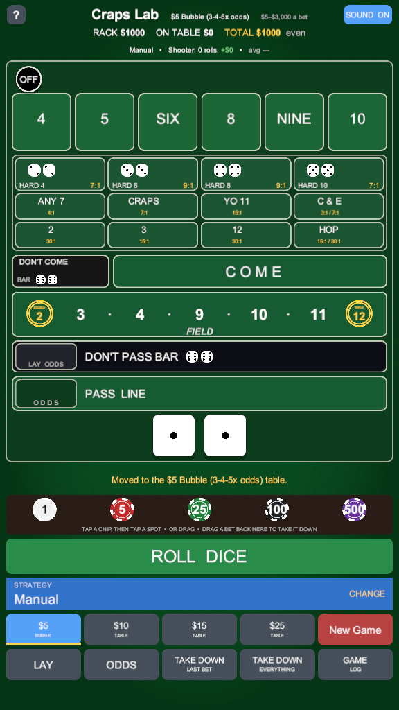
Black side up and reading OFF means the next roll is a come-out. White side up reading ON sits on top of whichever number is the point.
Tap one to bet that it rolls before a seven. The six and nine are spelled out, exactly as on a real layout, so they can't be misread upside down.
The number must come as a pair — 4-4 for a hard eight — before it comes any other way and before a seven.
One-roll bets settled by the very next throw: Any 7, Any Craps, Yo (11), the 2, the 3, the 12, and C&E.
Opens a picker for one exact dice combination, because twenty-one of them will not fit on the felt.
Available once a point is on. A come bet behaves like a fresh pass line: the next roll sets its own point, then it travels to that number's box.
A one-roll bet on 2, 3, 4, 9, 10, 11 or 12. The 2 pays double and the 12 pays triple.
The dark side. You are betting the seven arrives before the point does.
The bet the whole game is built around. Wins on 7 or 11 on the come-out, loses on 2, 3 or 12, and otherwise sets the point.
The printed box at the far left of each line bar. Odds are backed at true odds — the only bet on the table with no house edge at all.
$1, $5, $25, $100 and $500. Tap one to pick it up, then tap a spot; or drag it straight onto the felt. Drag a bet back here to take it down.
Table stakes on top, actions underneath. Both are covered in full further down.
Five steps from an empty table to a decision. This is the sequence every hand of craps follows, in any casino in the world.
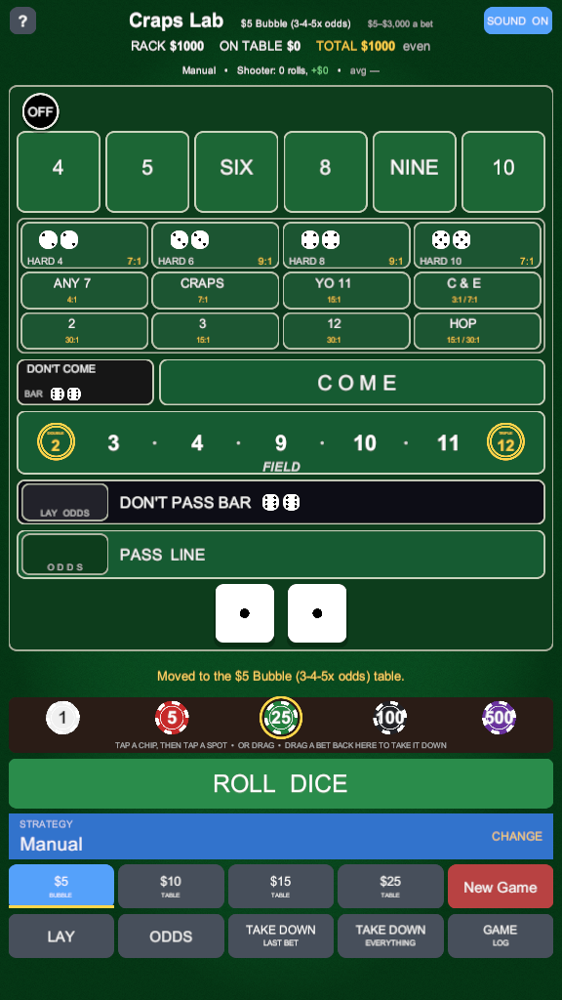
Tap a denomination on the rail and it lifts into your hand — a ring appears around it. Every spot you tap now gets exactly that much. Tap the chip again to put it back and return to the default amounts.
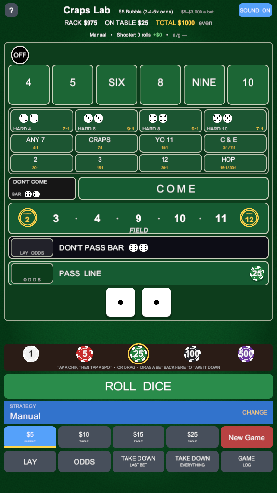
Tap the PASS LINE bar. On this come-out roll you win even money on a 7 or an 11, you lose on 2, 3 or 12, and any other number becomes the point.
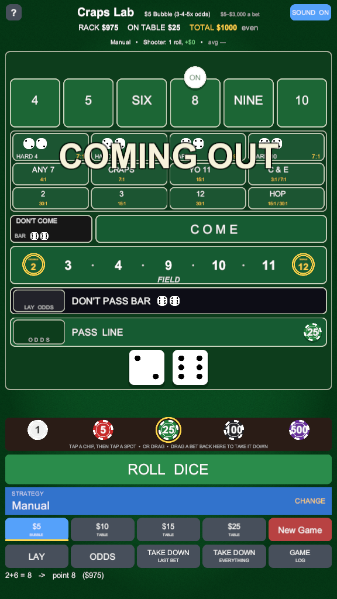
ROLL DICE throws them. Here the come-out was a five, so the puck flips to ON and climbs onto the 5. Now your pass line bet wins if a five comes before a seven, and loses if the seven comes first.
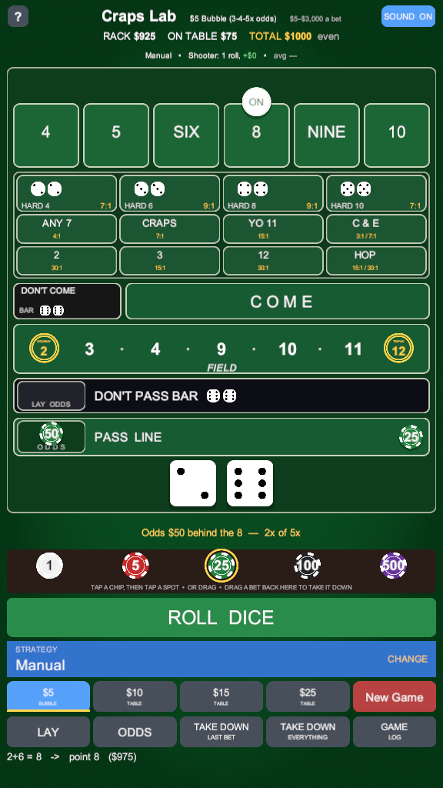
With a point established, tap the ODDS box at the left of the pass line bar. This is the best bet on the table and the only one the house takes nothing on — it pays exactly what the chance is worth. Each tap adds another multiple, up to the table's 3-4-5× limit.
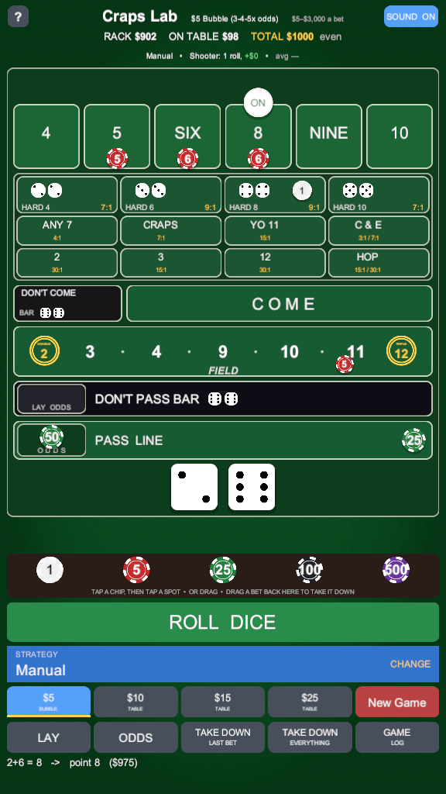
While the point is on you can place the box numbers, take a hardway, bet the field, or make a come bet. Keep rolling: make the point and the hand starts again, or roll a seven and everything on the numbers comes down at once. That is a seven-out, and the dice pass to a new shooter.
Two rows sit under the chip rail. The top row decides which table you are standing at; the bottom row acts on the bets in front of you.
$5 Bubble · $10 · $15 · $25
The table minimum. All four run 3-4-5× odds and a $3,000 maximum per bet. Your money and your strategy come with you when you move; your bets come down and the point goes away, so it asks twice if there is anything to lose.
New Game
Sit down again with a fresh bankroll. Choose anything from $100 to $5,000 — the card shows how many table minimums that actually buys you, which is the number that decides whether you survive a cold streak.
Roll Dice
Throws. Anything short of the minimum that is still sitting on the felt comes back to your rack first.
Lay
Arms lay mode. Tapping a number now bets against it instead of for it. Tap LAY again to disarm.
Odds
Arms odds mode, so a chip landing on a box means odds behind the come bet sitting there rather than a new place bet.
Take Down Last Bet
Undoes your last betting action, including a press — put $6 on the six then press it to $12, and this takes it back to $6, not to nothing.
Take Down Everything
Clears the felt of everything the house allows you to pull back. A pass line or come bet with a point on it is a contract bet and has to ride.
Game Log
The record of what has happened: this session hand by hand, and every past session you have played.
Strategy · Change
Hand the dice to one of the built-in systems and watch it play, or come back to Manual and bet the table yourself.
Sound
Every sound in the app is generated in code — chips, dice, payouts. This switches them off.
? (top left)
Opens this guide in your browser. The game itself never goes online — it hands the address to your browser and stays where it is.
Tap a chip then tap a spot, or drag the chip out of the rail and drop it. They do exactly the same thing, so use whichever your hands prefer. Dragging a bet from the felt back to the rail takes just that bet down.
Every payout in the app is the real one. The house edge column is what each bet costs you, on average, for every dollar it decides — and it is the reason the bets are not all equally good.
| Bet | Wins when | Pays | House edge |
|---|---|---|---|
| Pass line | 7 or 11 on the come-out, then the point before a seven | 1:1 | 1.41% |
| Don't pass | 2 or 3 on the come-out, then a seven before the point | 1:1 | 1.40% |
| Odds behind the line | Same as the bet it backs | true odds | 0.00% |
| Place the 6 or 8 | Six or eight before a seven | 7:6 | 1.52% |
| Place the 5 or 9 | Five or nine before a seven | 7:5 | 4.00% |
| Place the 4 or 10 | Four or ten before a seven | 9:5 | 6.67% |
| Buy the 4 or 10 | Same, but paid at true odds for a 5% fee | 2:1 | fee only |
| Field | 2, 3, 4, 9, 10, 11 or 12 on the next roll | 1:1 · 2 pays 2:1 · 12 pays 3:1 | 2.78% |
| Bet | Wins when | Pays | House edge |
|---|---|---|---|
| Hard 6 or hard 8 | 3-3 or 4-4 before the number comes easy or a seven | 9:1 | 9.09% |
| Hard 4 or hard 10 | 2-2 or 5-5 before the number comes easy or a seven | 7:1 | 11.11% |
| Any craps | 2, 3 or 12 on the next roll | 7:1 | 11.11% |
| Yo (11) | Eleven on the next roll | 15:1 | 11.11% |
| Any seven | Seven on the next roll | 4:1 | 16.67% |
| The 2 or the 12 | That exact number on the next roll | 30:1 | 13.89% |
| Hop, hard | That exact pair on the next roll | 30:1 | 13.89% |
| Hop, easy | That exact combination on the next roll | 15:1 | 11.11% |
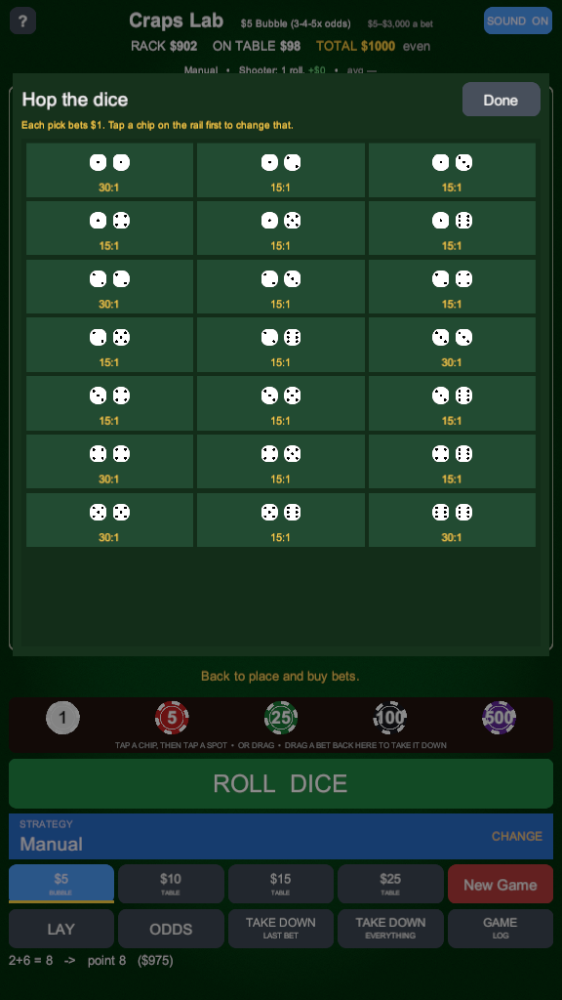
A hop bet is one exact combination on the very next roll — 5-2, or 3-3. There are twenty-one of them, which is more than the felt has room for, so the HOP box opens a picker instead. That mirrors a real table, where you call the bet and the stickman sets it in the middle for you.
The payouts are real, and so is the price: these are the most expensive bets in the game. They are in the app because they exist, not because they are a good idea.
Two buttons change what a tap on a number means. They are modes rather than places on the felt, because a real layout has nowhere to put them — the puck already owns the top of the box, and the box itself already means "place bet".
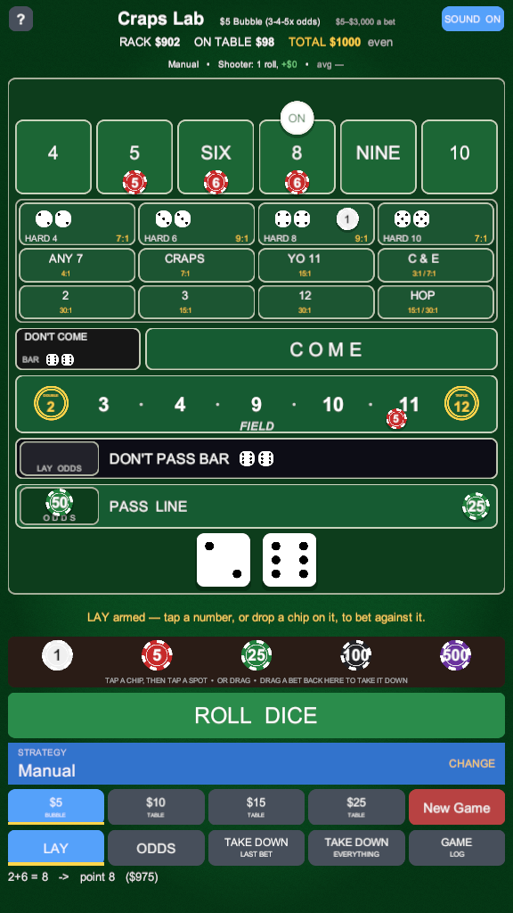
With LAY armed, tapping the 4 bets that a seven arrives before a four does. A lay is sized by what it wins rather than what you put up: laying the four means risking $2 for every $1 it pays, because a seven is twice as likely as a four.
The button stays lit while the mode is armed. Tap it again and taps go back to meaning place bets.
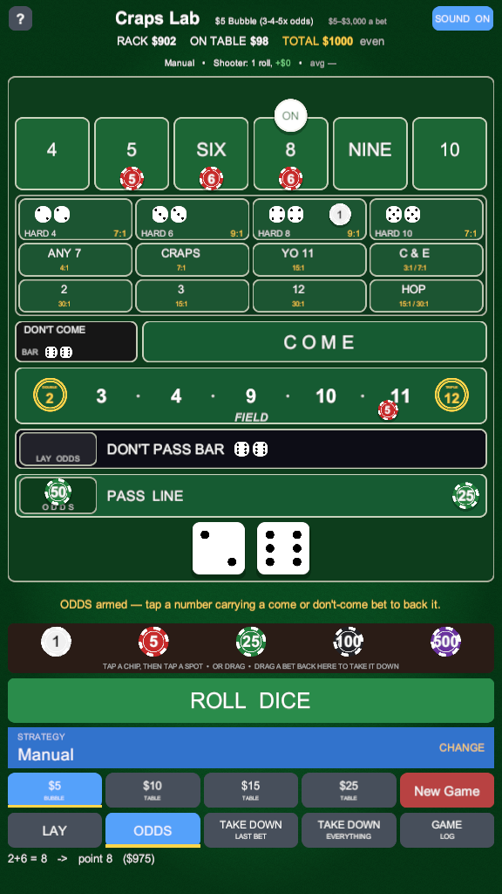
When a come bet travels to a number, its odds have nowhere of their own to go; a dealer simply sets them on top of the flat bet, slightly off centre. ODDS mode is how you say "this chip is odds, not a new place bet" when it lands on a box that already has a come bet on it.
It works on the dark side too: with a don't-come bet on a number, the same mode lays the odds behind it.
Two rules on a real table surprise people, so the app follows them exactly rather than quietly smoothing them over.
They pay 7:6, which means the bet has to divide by six for the payout to be payable in whole dollars. Drop a $5 chip on the six and the dealer makes it up to $6. Add another $5 and you get $12, not $11. On a $10 table the smallest bet the six will take is $12 — not $10, which nobody could pay you correctly. Every other number pays 7:5 and goes up in fives.
Placed, the four pays 9:5 and costs you 6.67% — one of the worst bets on the layout. Bought, it pays true 2:1 and the house takes a 5% fee instead, which is far cheaper once the bet is big enough to make the minimum $1 fee worth it. So at $20 and above the app buys them for you and marks the chip with a BUY lammer. Below that it places them, because the flat fee would cost more than the better payout is worth.
This is the half of the app that is a laboratory rather than a game. Nineteen complete systems are built in, four of them free to play, and you can build your own and measure it over ten thousand simulated sessions for nothing. The measured numbers for the built-in systems are what the one-time unlock buys.
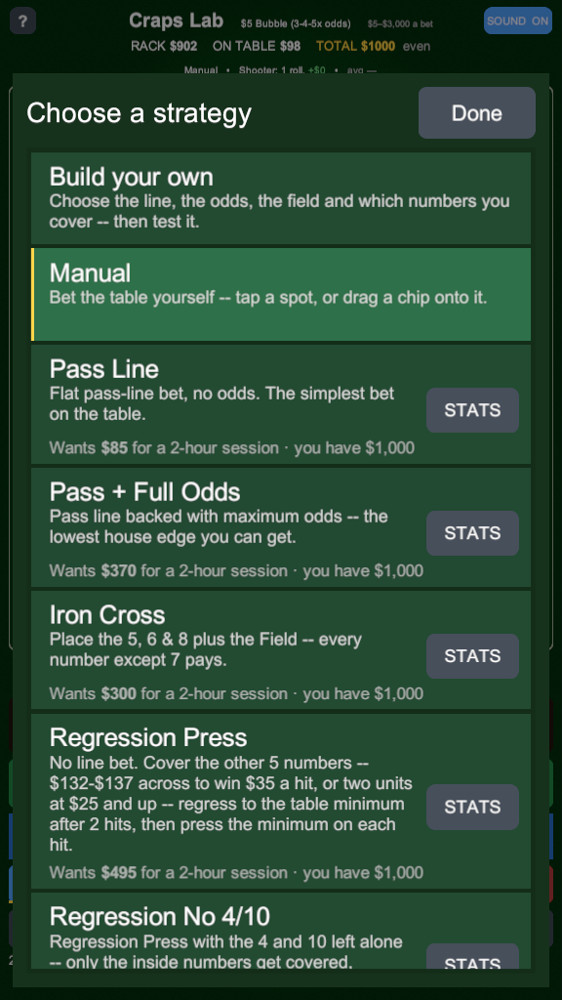
Every system says what it does in a sentence. Pick one and it takes over the betting — you keep tapping ROLL and watch it work, which is a much faster way to understand a system than reading about it.
Each row also carries the line that matters most: what it wants you to sit down with, against what you are actually holding. If your rack is short of what a system needs, the row says so in amber, because being underfunded is how most sessions really end.
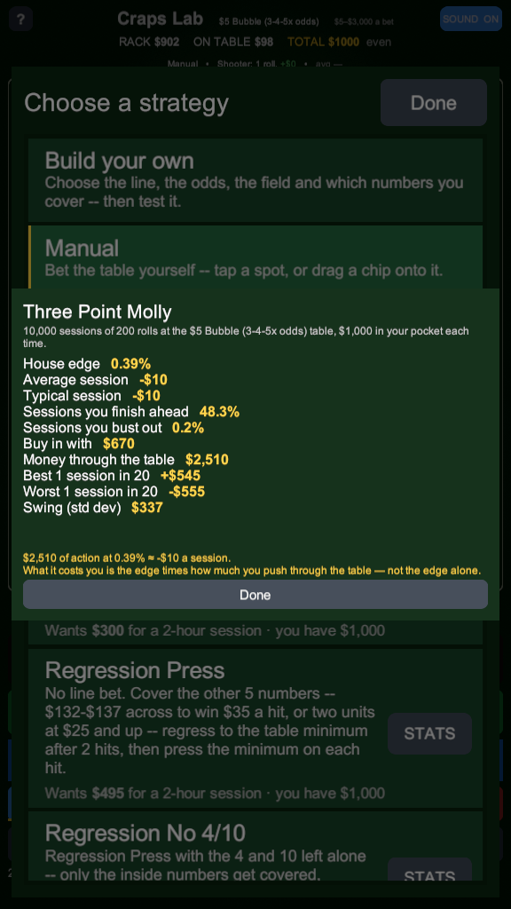
STATS runs the system through ten thousand sessions of two hundred rolls and reports what actually happened: the house edge, the average and typical result, how often you finish ahead, how often you bust out, and the swing. On a free install this is the one thing behind the unlock — measuring a strategy you built is always free.
The line at the bottom is the whole point of the app. What a system costs you is its edge multiplied by how much money you push through the table — not the edge alone. That is why a low-edge system that bets constantly can lose you more than a high-edge one that bets rarely.
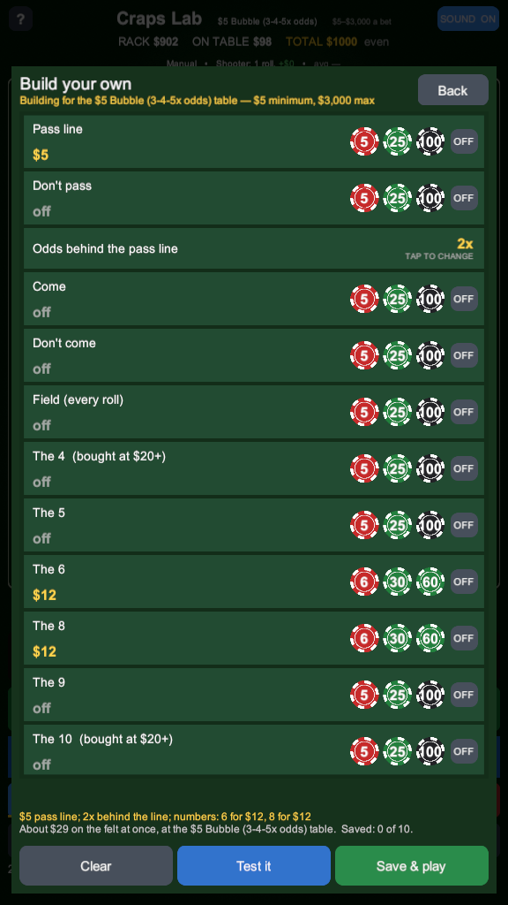
Choose the line, the odds, the field, which numbers you cover and how much on each. Then add the parts that make a system rather than a bet: regress to the minimum after a set number of hits, press each number that hits, or take everything down after a good run. Save it and it joins the chooser alongside the built-in nineteen — one saved strategy free, ten once unlocked.
Test it and it goes through exactly the same ten thousand sessions the built-in systems do. Measuring what you built is free — it is the fastest way to find out whether the idea you have been carrying around actually holds up.
Four lines of log under the felt is what fits on a phone, and it scrolls away in seconds. The GAME LOG button keeps the rest.
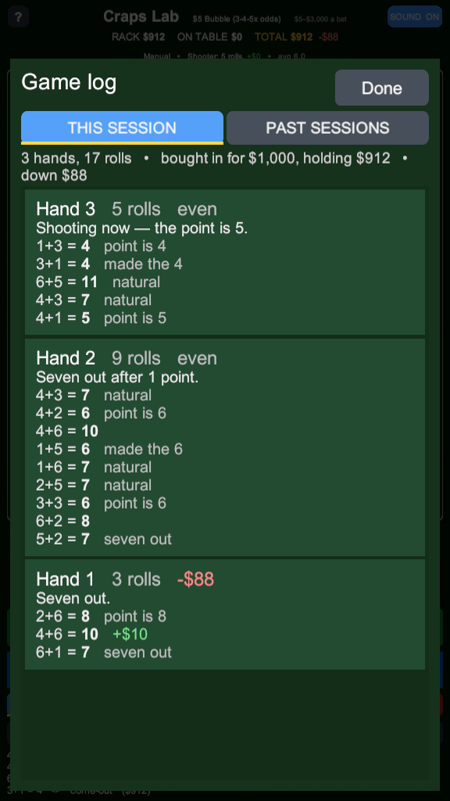
A hand is one shooter's run, from the come-out to the seven-out — what a craps player means by a game. Each one lists every roll, what it did (the point, a natural, craps, a number made), and the money it moved, with the hand's length and net at the top.
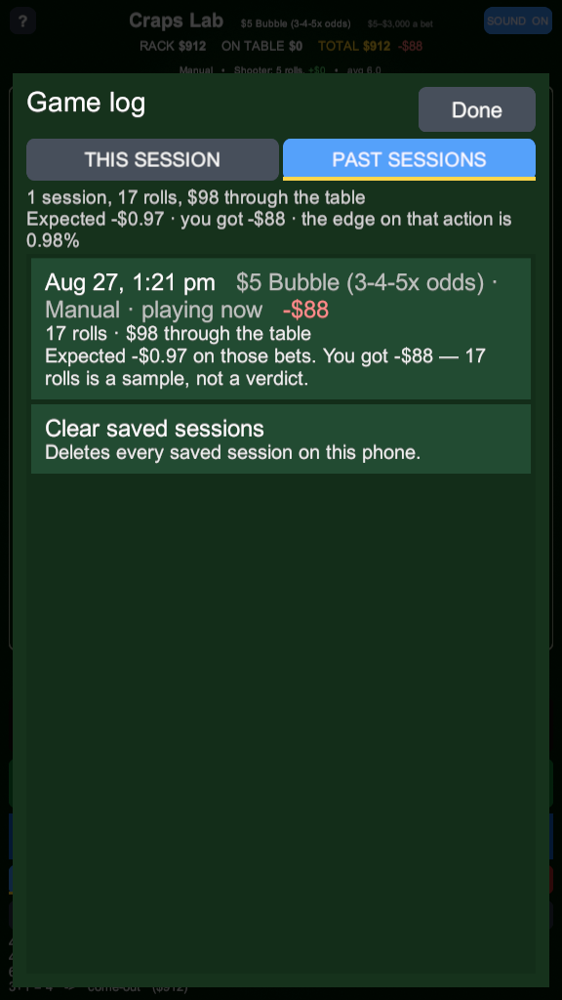
Every run you play is saved on your phone: when, which table, what you were playing, how many rolls, how much went through the table and what you finished with. A run ends when you buy in again, walk to another table, or change strategy — so no line ever averages two different things together.
Beside your result sits what those exact bets were expected to cost, worked out from the bets themselves rather than from an average. A $25 pass line is expected to cost 35 cents; if you finished $25 up, the log says so and tells you plainly that eight rolls is a sample, not a verdict. Watching your own results wander around that number, and slowly settle towards it, is the most honest lesson the app has to offer.
Craps Lab is free, and the game half of it is free forever. The one-time unlock buys the analysis — the measured numbers for the systems somebody else wrote.
| What you get | Free | Unlocked |
|---|---|---|
| The whole table, every bet, played by hand | Always | Yes |
| All four table stakes, and the shooter statistics | Yes | Yes |
| The game log and your saved past sessions | Yes | Yes |
| Built-in strategies you can play | 4 of 19 | All 19 |
| Build your own strategy, and test it | Yes | Yes |
| Saving strategies you built | One | Ten |
| Measured statistics for the built-in systems | — | Yes |
| The bankroll each built-in system actually needs | — | Yes |
It is not a demo, and it is not a timer. Manual play is never gated at any point: the complete table, every bet on it, all four stakes and the four built-in systems stay yours whether you ever pay or not. The unlock is one payment, not a subscription, and it comes back free if you reinstall or change phones.
Every system in the chooser shows its name and what it does, unlocked or not. Nothing is hidden from you to make you curious — what the unlock buys is the ability to play the other fifteen and to see what they have been measured to cost.
The uncomfortable part, stated plainly, because a strategy tester that hides it would be worthless.
No betting system beats craps. Not one of the nineteen in the app, not the one you build, not the one that has been working for your friend all year. Every bet on the table has a fixed cost per dollar decided, and no arrangement of those bets — pressing, regressing, covering more numbers, switching sides — changes any of them. What a system changes is how much money runs through the table and how wild the ride is.
That is the equation the whole app is built to demonstrate:
What it costs you = the house edge × how much money you push through the table.
This is why the measured card reports the money through the table next to the edge, and why the session log puts the expectation beside your result. A system with a 2.4% edge that pushes $28,000 through the table in a session will cost you far more than a 6.7% bet you make twice. Cheap bets made constantly are not cheap.
What the app is genuinely good for: learning the layout and the etiquette without losing money doing it; finding out what a system really costs before you take it to a table; and seeing how far a short run can wander from what the maths says, which is the thing that convinces people they have found something when they have not.